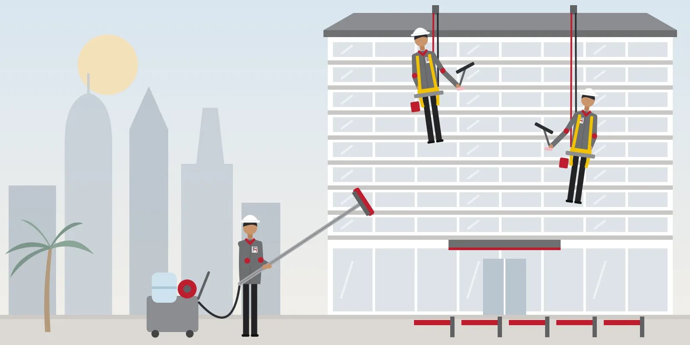

Guide · Facade cleaning
How often should a building's facade be cleaned in Doha?

Hotels, prestige office towers and showrooms in Doha usually need facade cleaning every 3 to 4 months. Most commercial and residential buildings need it every 5 to 6 months. Stone and cladding can be cleaned once or twice a year, with spot cleaning in between. After a major sandstorm, a one-off clean is worth booking where appearance matters.
Why facades get dirty fast in Qatar
Dust is the main reason. Fine desert dust settles on glass, cladding and stone every day. Morning humidity turns it into a sticky film, and the sun then bakes it on.
Sandstorms make it worse. A single storm can coat a whole elevation in a day.
Hard water is the other problem. Spray from irrigation, or cleaning with untreated water, leaves white spots on glass. Traffic fumes, bird droppings and AC condensate add streaks, and buildings near the sea also collect salt.
Left too long, some deposits can etch glass and stain stone for good. Regular cleaning protects the facade. It is also a chance to spot damaged seals, loose panels or cracked glass early.
How often, by building type
| Building type | How often | Why |
|---|---|---|
| Hotels, prestige office towers and showrooms | Every 3–4 months | Guests, tenants and clients notice the glass first |
| Most commercial and residential buildings | Every 5–6 months | Keeps dust and water spots from building up |
| Stone, GRC and cladding | Once or twice a year | Spot-clean stains in between |
| Buildings near the coast, main roads or construction sites | More often than the above | Dust and salt build up faster |
| Any building after a major sandstorm | One-off clean | Where appearance matters |
Entrances, canopies and ground-floor glass are seen up close. Many buildings clean these more often than the rest of the facade.
How the facade is reached
The access method is chosen after a site survey, elevation by elevation:
- Water-fed poles with purified water, for ground-floor and low-level glass.
- Mobile elevating work platforms (MEWP), such as boom lifts, for mid-rise areas, canopies and parts a BMU cannot reach.
- The building's BMU or gondola, for towers that have one. It must be checked as certified and safe before use.
- Rope access, for high-rise elevations, curved or recessed areas and buildings without a BMU.
All work at height should follow a written method statement and rescue plan. The area below should be barriered, and work should stop if wind, sandstorms, rain or lightning make it unsafe.
When to book
October to April is the best time. The cooler weather suits work at height, so it is also the busiest season. Book early to get the dates you want.
In summer, the heat limits working hours, so cleans are usually planned for early mornings.
After a major sandstorm, book a clean soon. The longer dust sits on glass in humid weather, the harder it is to remove. It also helps to plan a clean before events, inspections or a tenant handover.
An annual contract with a fixed number of cleans keeps the building looking the same all year, and you do not need to book each visit.
Frequently asked questions
Can a building without a BMU be cleaned?
Yes. Rope access, mobile elevating work platforms or water-fed poles are used instead, depending on the height and layout of the building.
Will cleaning damage the glass or cladding?
Not when it is done properly. Purified water and products suited to each surface should be used, with no abrasive tools on coated glass or cladding.
Can hard-water stains be removed?
Light stains usually come off during cleaning. Heavy or old stains may need a separate restoration treatment, tested first on a small area.
Will facade cleaning disturb tenants?
Very little, if it is planned well. Busy entrances are often cleaned early in the morning or at weekends, and the area below is kept closed off while work is done above.
Plan your facade cleaning
JAFM Qatar provides facade cleaning across Qatar, from West Bay and Lusail to Al Wakrah and the Industrial Area. We survey the building, recommend how often it needs cleaning and choose the safest access for each elevation. See facade cleaning in Doha or request a free site visit.